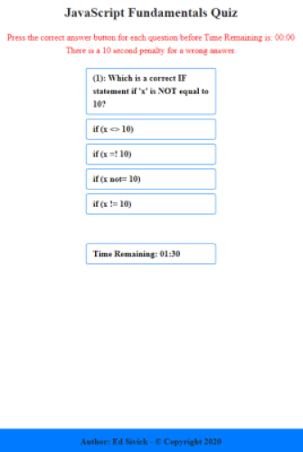
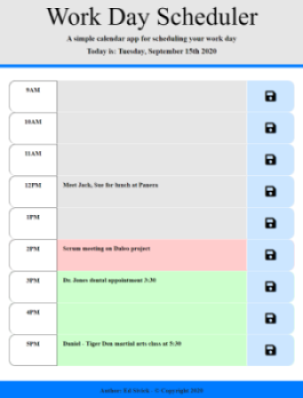
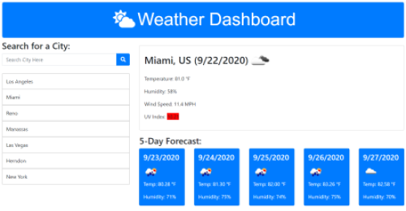
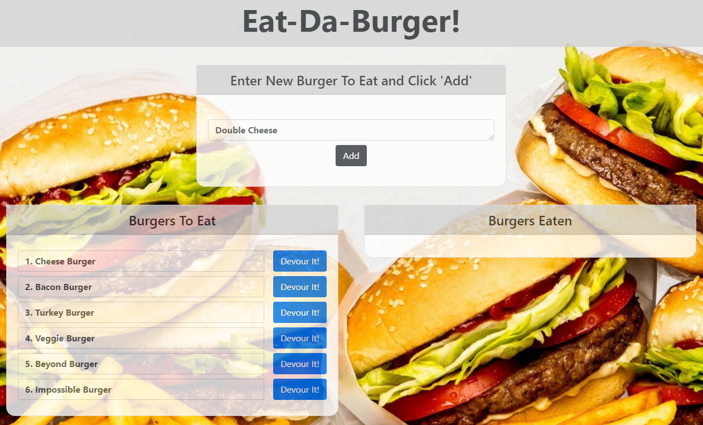

Web Developer Portfolio
Project Title: Holiday Wish List
Application Link: Holiday Wish
List
GitHub Repository: GitHub
Link
Project Description:
Holiday gift giving can be stressful for many who are unfamiliar with the gift preferences of
friends and/or family. The ‘Holiday Wish List’ is an app that enables each participant to
add gifts to their list, and view or select gifts to give from the lists of other participants.
The app will initially take the user to a Sign Up Form where they can join a group
of participants or proceed to a Login Form if they are already a member. After
successful entry, they can retrieve and add to their personal wish list, view the wish lists created
by other participants, and select wish list items to purchase from other participants. When an item
is selected from the list of another participant, the item is removed from that participant’s list.
However, the updated list showing the removal of the item is not visible to the creator of the
list.
The app is created using Node and Express web server. The wish lists are created/modified using
MySQL database with a Sequelize ORM. The HTML layouts utilize Handlebars templates to display the
data which is added and retrieved using Express GET and POST route methods.
Project Title: Worldwide Travel Assistant
Application Link: Worldwide Travel
Assistant Link
GitHub Repository: GitHub Link
Project Description:
Business and leisure travel to many states or countries can be difficult if you are not equipped
with the proper attire, or knowledge of specific holidays in that area. The ability to view this
information before visiting the region can save the traveler time and effort through pre-planning.
The travel input criteria including: visiting city, start travel date, and end travel date will
initialize a server-side API from Calendarific, providing
them with holiday information as well as useful facts about their destination. Information
pertaining to the destination country is supplied to the app by means of an API from
Rest Countries. The traveler can also
utilize the weather information for that destination, and select the proper clothing or make
appropriate plans to adjust for it. The input data is used to initiate another server-side API from
OpenWeather to provide the weather information. The date
information is displayed using Moment.js.

Project Title: Timed Code Quiz
Application Link: Timed
Code Quiz
Link
GitHub Repository: GitHub
Link
Project Description:
This is an application that introduces a timed code quiz with multiple-choice questions. The app
will run in the browser and feature dynamically updated HTML and CSS powered by JavaScript code. It
also features a clean and polished user interface and is responsive, ensuring that it adapts to
multiple screen sizes. When the user clicks a start button, a timer will start and the user is
presented with a question. When the question is answered, another question is presented. If the
question is answered incorrectly, additional time is subtracted from the timer. The game is over
when all questions are answered or the timer reaches 0. The user can then save their initials and
quiz score.

Project Title: Work Day Scheduler
Application Link: Work
Day Scheduler Link
GitHub Repository: GitHub Link
Project Description:
This is an application that creates a daily planner to manage time effectively by posting hourly
events and/or tasks into assigned timeblocks. The current day is displayed at the top of the
calendar. Timeblocks in the form of rows are assigned for standard business hours (9AM to 5PM).
When viewing timeblocks for the current day, each block is color coded to indicate whether that
specific block is in the past, present, or future. When the user clicks on a timeblock, they are
able to enter an event or task associated with that time period. They can save the information by
pressing the corresponding save button for that timeblock. The information is then saved into
local storage.

Project Title: Weather Dashboard
Application Link: Weather Dashboard Link
GitHub Repository: GitHub Link
Project Description:
This is an application that creates a weather dashboard using weather data from
OpenWeather to view current and future
weather for a city. The user is able to input a city and view its relative weather data.
The city name, date, and weather icon representing the weather on the current date will appear.
The temperature, humidity, wind speed, and UV index will also appear below the city name and
date. The UV index will be color coded to identify the severity: favorable (green),
moderate (yellow), or severe (orange-red-violet). The future weather will be displayed as a
5-day forecast displaying the date; a weather icon representing the weather on that date;
the temperature, and the humidity. The user will be able to click on a city stored in the search
history, and again view its current and future weather. When re-opening the app, it will display
the current and future weather for the last city that was searched. If there were no cities
searched, it will display the weather for New York, New York.

Project Title: Eat-Da-Burger!
Application Link: Eat-Da-Burger! Link
GitHub Repository: GitHub
Link
Project Description:
Eat-Da-Burger! is a restaurant app that is created using MySQL, Node, Express, and Handlebars.
It allows users to input the names of burgers they would like to eat. Whenever a user submits a
burger's name, the app will display the burger on the left side of the page, waiting to be
devoured. Each burger in the waiting area also has a `Devour it!` button. When the user clicks
it, the burger will move to the right side of the page. The app stores every burger in a
database (burgers_db), whether devoured or not.